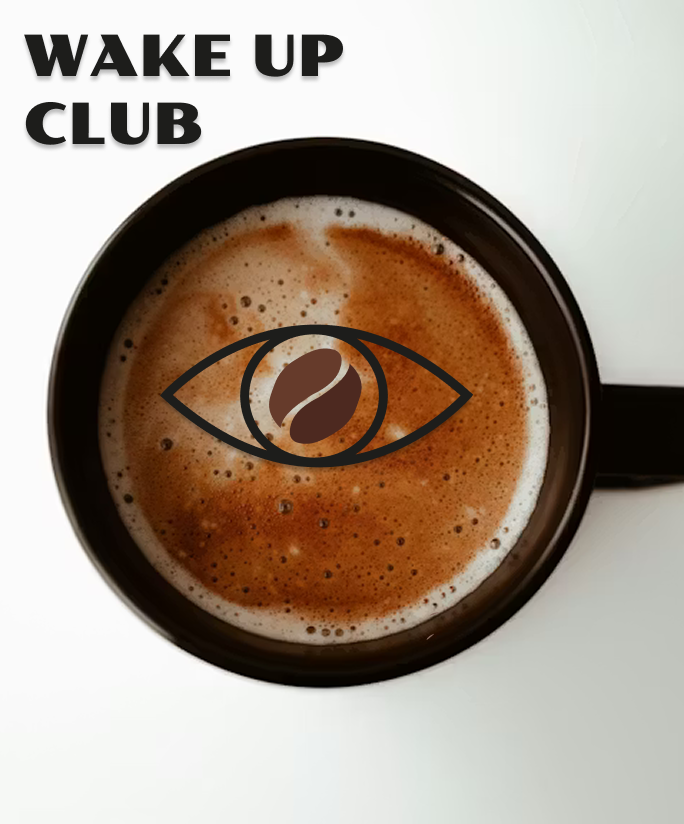
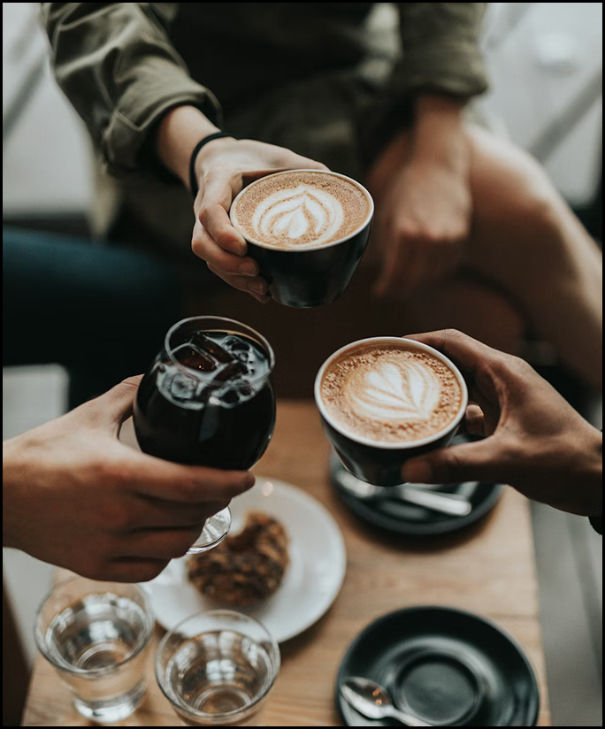
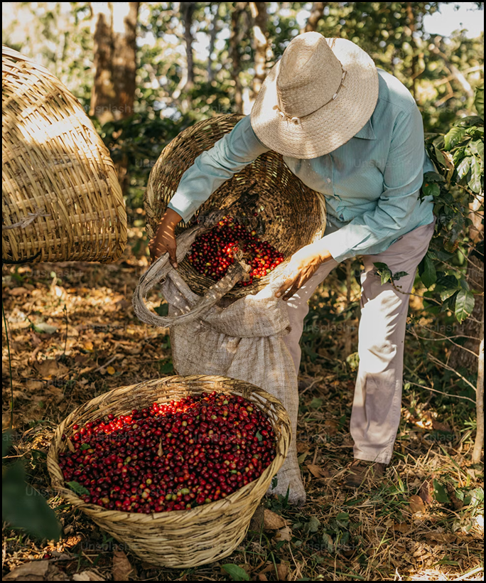

Cómo empezó todo
Wake Up Club nació de una sensación muy simple: el cansancio de vivir con prisa. Nos dimos cuenta de que el café estaba ahí todos los días, pero casi nunca lo disfrutábamos de verdad. Era una herramienta para rendir más, no un momento para estar mejor.
Así empezó todo, queríamos devolverle al café su significado y convertirlo otra vez en ritual, en pausa y en algo que acompañe, no que empuje. Inspirados por la simplicidad y el equilibrio, decidimos crear una marca honesta: café 100% arábica, bien seleccionado, sin complicaciones innecesarias y con una estética limpia que reflejara lo esencial. Sin elitismo, sin palabras difíciles, sin postureo.
Wake Up Club no nació para acelerar el día, sino para empezarlo con intención. Creemos en la energía con propósito, en la creatividad sin presión y en el valor de los pequeños momentos cotidianos. Porque despertarse no es solo abrir los ojos sino elegir cómo quieres empezar.
Nuestro valores
Para cualquier momento
Wake Up Club nace de la idea de que el café es mucho más que una bebida: es un momento. Un momento para uno mismo y también para compartir. Siempre hemos sentido que algunas de las conversaciones más sinceras, los silencios más cómodos y las pausas más necesarias ocurren alrededor de una taza de café.
Por eso quisimos crear una marca que representara eso: calma, cercanía y conexión. Para nosotros, el café no pertenece solo a la mañana ni solo al trabajo. Puede estar en una sobremesa en familia, en una charla tranquila al atardecer, en un rato de lectura, o en esos minutos a solas donde simplemente respiras y te encuentras contigo. Es un pequeño ritual que transmite paz y ayuda a reconectar con lo importante.
Wake Up Club quiere acompañar esos instantes. Con sabores equilibrados, honestos y reconfortantes, buscamos que cada taza invite a bajar el ritmo, mirar alrededor y disfrutar de la vida mientras sucede. Porque a veces, lo más sencillo —una taza caliente entre las manos— es lo que más nos conecta.


Orígenes y propósito
Wake Up Club nace con el compromiso de cuidar no solo cada taza, sino también todo lo que hay detrás de ella. Nuestro café proviene de fincas seleccionadas en Latinoamérica y África, donde se cultiva 100% arábica bajo prácticas responsables y respetuosas con el entorno.
Trabajamos con productores que apuestan por métodos tradicionales, cultivo a la sombra y procesos que reducen el impacto ambiental, protegiendo la biodiversidad y el suelo.
Creemos que un buen café no puede existir sin respeto por su origen. Por eso priorizamos relaciones directas, comercio justo y trazabilidad real. Sabemos de dónde viene cada grano y cómo ha sido trabajado. Además, utilizamos envases pensados para minimizar el impacto y fomentamos un consumo consciente, porque la sostenibilidad no es una tendencia, es una responsabilidad. Una parte de nuestros beneficios se destina a proyectos sociales y medioambientales vinculados a las comunidades productoras y a iniciativas de reforestación.
Para nosotros, disfrutar del café también significa cuidar el planeta que lo hace posible.
Nuestras pasiones
Calma · Conexión · Disfrute
Nos apasiona el café bien hecho, los momentos compartidos y las pausas que dan sentido al día.Creemos en disfrutar sin prisa, en la simplicidad y en el valor de los pequeños rituales.
Nuestro café nace del amor por conectar con las personas, la naturaleza y la vida cotidiana.